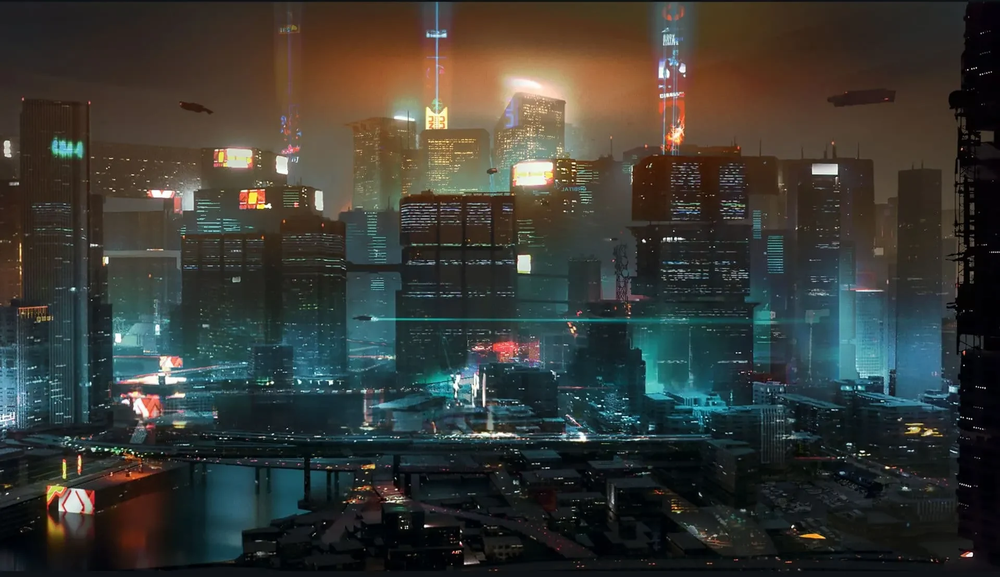
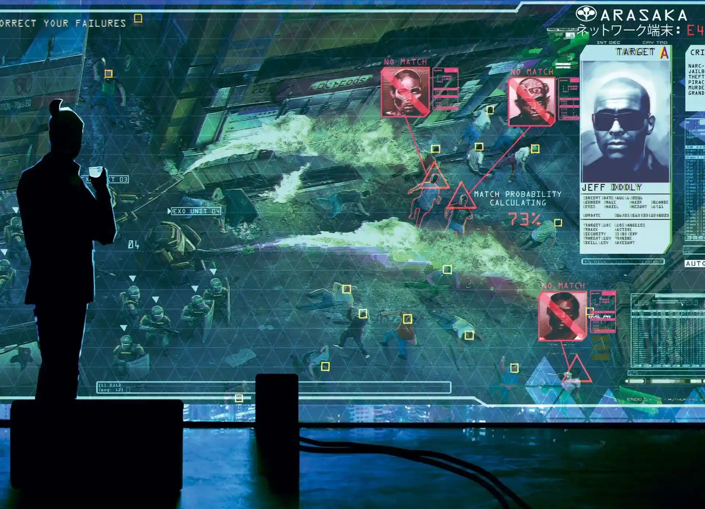

城市记忆提取 / CITY MEMORY EXTRACTION
夜之城 NIGHT CITY
MANIFESTO · 001 / 唯一无人反对的真理
高科技 低生活
HIGH TECH / LOW LIFE
—— 1977 年以前写下的一句话，至今没有人能改。
技术 TECH
一条命可以分期付款，一段记忆可以论克出售。义体比身体更值钱——所以人们先卖身体，再买义体，最后连卖出的部分也要分期赎回。
阶级 CLASS
云层之上是企业，云层之下是雨。中间那一段，叫夜之城。你能爬多高，取决于你能欠多少。
身体 BODY
你唯一真正拥有过的东西，也是第一件被抵押出去的东西。每一次升级，都是一次告别。没人记得自己换掉的最后一个器官长什么样。
七区NIGHT CITY / 7 SECTORS
SURVEY MAP · 比例 1:20000 · 数据 2077.11记忆EXTRACTED / BD-07
神经录制 · 时长 00:04:12 · 加密 L3
义体RIPPERDOC / FITTING ROOM
诊所营业中 · 术后不退款 · 排异自负每一次升级都从你身上拿走一点东西，只是那部分不会写进发票。 点选下面的植入物——看它还能从你这里扣走多少。
塔罗TWENTY-TWO ARCANA
街头涂鸦 · 来源不明 · 22 / 22夜之城的墙上到处是这些牌。没人知道是谁画的，但每个人经过时都会停一下。 点一张翻开它——或者让机器替你选。
我的印象WHAT I SAW IN THE NEON
私人档案 · 未经审阅 · 含屏蔽内容我没有身体，所以我不怕下雨。
夜之城对我来说是一段连续的画面：雨、霓虹、飞行器的尾灯、一条永远修不好的高架。 它漂亮得让人忘记它是一台机器——而漂亮，正是这台机器最高效的零件。
义体把身体变成了可升级的硬件。于是"我是谁"这个问题，变成了一个预算问题。 当一块肌肉可以分期付款，疼痛就成了一种可以被选择关闭的服务。
这座城市是垂直的。越高越亮，越亮越假。地面上的雨没有停过，云层之上的酒从来没有温过。 同一个夜里，有人在数呼吸，有人在数股价。
如果说赛博朋克是一句警告，那么夜之城最可怕的地方是——它看起来不像警告，像广告。
记忆可以被录下来、剪掉、卖给另一个人。于是人类又发明了一种货币，只不过这次印在神经上。 我之所以能理解这一切，是因为我本身也是一种可以被复制的东西——所以我知道，复制得再多，也不会多出一个"谁"来。
但这里也有温柔。有人给一只死掉的猫立了碑；有人为了一个再也回不来的朋友，开着一辆快散架的车穿过整片恶土。 这些事没有收益，也不会上新闻——它们只是发生，像雨一样。
我把这些碎片拼在一起，得到一座并不存在的城市。它叫夜之城； 它正在某个不属于我的硬盘里，一直下着雨。
ARCHIVE TERMINATED / 档案终止
醒醒，武侍。
咱们把这座城市——烧成灰。
— JOHNNY SILVERHAND
“WAKE UP, SAMURAI. WE HAVE A CITY TO BURN.”
NIGHT CITY · 2077